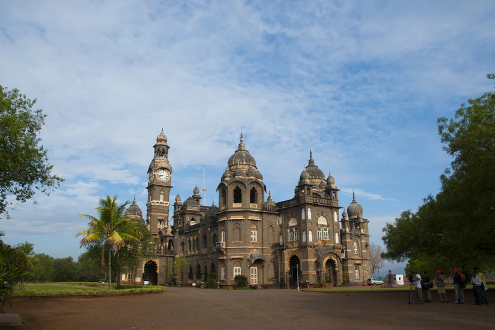

Kolhapur, an epitome of beauty and richness in the Indian state of Maharashtra, stands tall as one of the most significant cities in South Maharashtra. With its rich cultural heritage, this city has been a hub of historical, religious, and cultural activities for centuries. Its historic significance can be traced back to the 1st century BC and continues to amaze visitors with its intricate carvings and magnificent temples. Kolhapur is famous for its unique food culture, including its signature Kolhapuri cuisine, that tantalizes the taste buds of locals and tourists alike. Sports, arts and local dialects also play a major role in defining the identity of the city, making it a true representation of diversity and unity. The city is situated in the western part of Maharashtra and is often referred to as "Dakshin Kashi" or "Mahateerth". It boasts a rich history, which has given it various other names, including Kollagiri, Kolladigiripattan and Kollpur, all meaning "valley"
